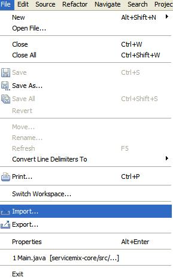
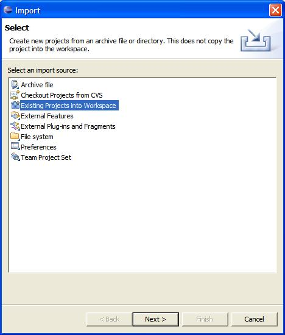
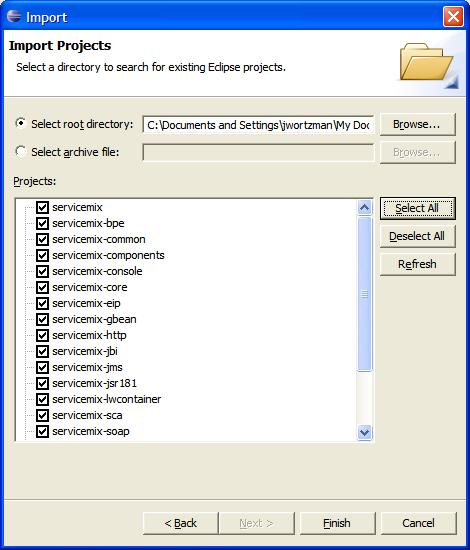
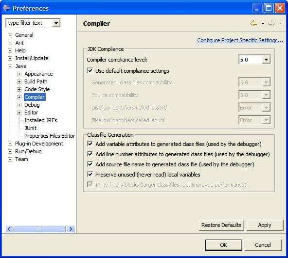
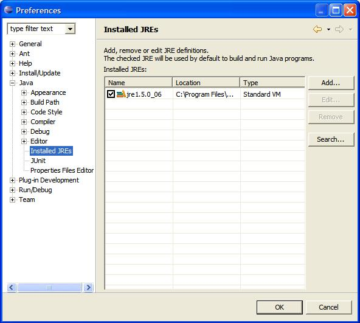
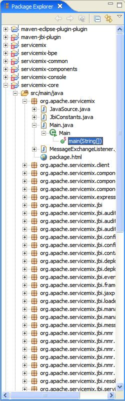
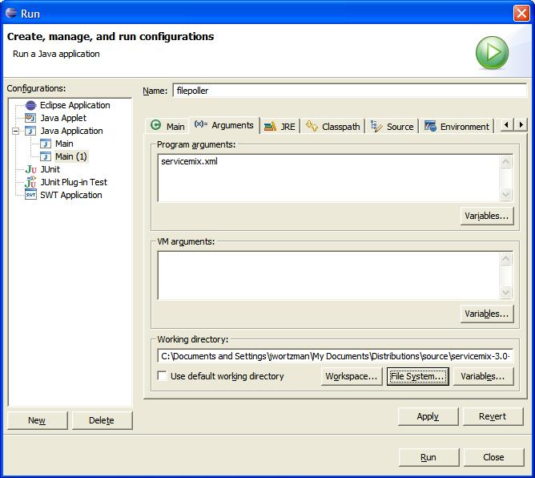
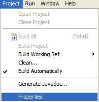
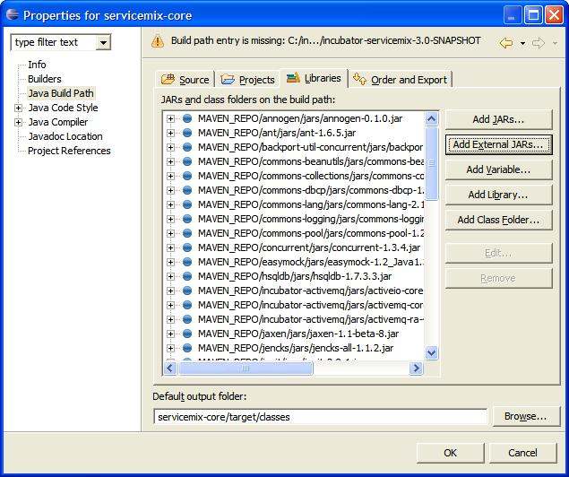
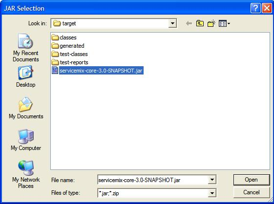

Introduction
This document will guide you through importing ServiceMix into the IDE Eclipse.
Pre-Installation Requirements
Hardware:
- 52 MB of free disk space for the ServiceMix 3.x binary distribution.
- 18 MB of free disk space for the ServiceMix 3.x source or developer's distributions.
Operating Systems:
- Windows: Windows XP SP2, Windows 2000.
- Unix: Ubuntu Linux, Powerdog Linux, MacOS, AIX, HP-UX, Solaris, any Unix platform that supports Java.
Environment:
- Java Developer Kit (JDK) 1.5.x (Java 5) for compiling/building.
- The JAVA_HOME environment variable must be set to the directory where the JDK is installed, e.g., c:\Program Files\jsdk.1.5.x
- Maven 1.0.2 or greater.
- Eclipse 3.x or greater.
Importing ServiceMix
Below are the steps to import ServiceMix as a project in Eclipse.
Preparing the Files for Eclipse
- Grab the sources from svn or download
 servicemix source distribution.
servicemix source distribution.
- From the command line execute the following Maven command to ready the project for Eclipse.
maven -Dmaven.test.skip=true default eclipse
In Eclipse:
- From the "File" menu select "Import".

- Select "Existing Projects into Workspace" and click "Next"

- Browse for the root directory, which is the directory in which you downloaded ServiceMix. "Select All" the files in the Import pop-up window. They are probably already pre-selected for you (check box is checked). Click "Finish" in the Import window.

- From the "Windows" menu and click "Preferences"
The Preferences window will pop-up.
Change to JDK 5
Windows>preferences click on Compiler
Compiler compliance level must be 5.0, pull down menu and select.
Check the "Use default compliance settings" box.

- Then check under "Installed JREs" that you have JDK 5, e.g., jre_1.5.x

- Click on the Java plus sign, then click on Build Path
then select Classpath Variables.

- Click on New button to right
A pop-up appears.
Enter the Name: MAVEN_REPO
Enter the Path, which is your local maven repository, usually located in
your home directory .maven, for example:
C:\Documents and Settings\jwortzman\.maven\repository

Running an Example
- Now you can run an example:
a. In the Package Explorer find the Main class, which should be located in: servicemix-core/src/main/java/
under org.apache.servicemix/Main.java.
Double click on the main() class.

- From the Run menu select "Run..."

- You will get a Run window pop-up, from there select Java Application.
- Click on New button in botton left
- Name the Project: any name you like, for example if you want to run the FilePoller application call it "filepoller".
- Click on arguments button:
- In the Program Arguments box enter servicemix.xml
- In the Working Directory enter the path of your example. Such as:
C:\Program Files\servicemix-1.0.1\examples\file-binding
You can use the "File System..." button to browse for your directory.
- Click Apply.
- Click Run

Configuring Eclipse
Updating Eclipse from Trunk
- Browse the "Project" menu and select "Properties"

- Click "Java BuildPath" and under the "Libraries" tab click "Add External Jar".

- Browse to the incubator-servicemix-3.0-SNAPSHOT.jar location:
\target\incubator-servicemix-3.0-SNAPSHOT\bin\incubator-servicemix-3.0-SNAPSHOT and Click "Open" then "OK" in the "Properties" screen

- Allow some time for the individual projects to build.